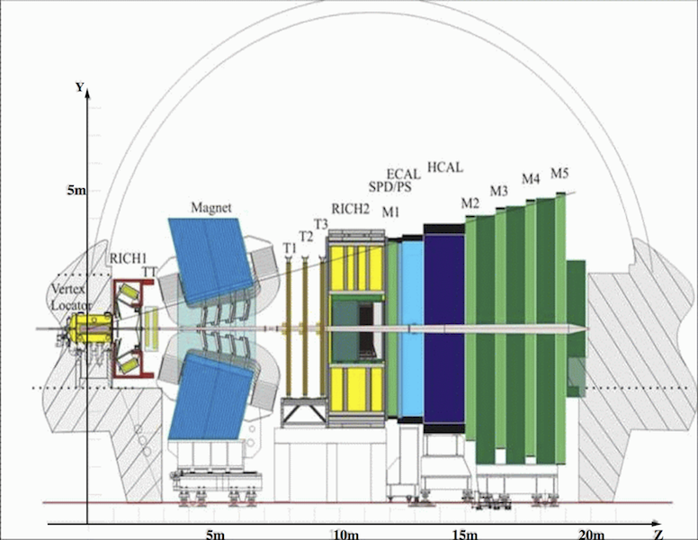

View on GitHub
CERN Webfest2013
Reproducible Science
Download this project as a .zip file
Download this project as a tar.gz file
CERN Summer Student Webfest
Project description
Root tutorials
Formula
Histogram with error bars
Multifit
Labels
Physics master classes
D0: exercise 1
D0: exercises 2,3
ATLAS event display
. You need to install
Unity Web Player
chi_b particle
(static)
Presentation (TODO)
LHCb detector
